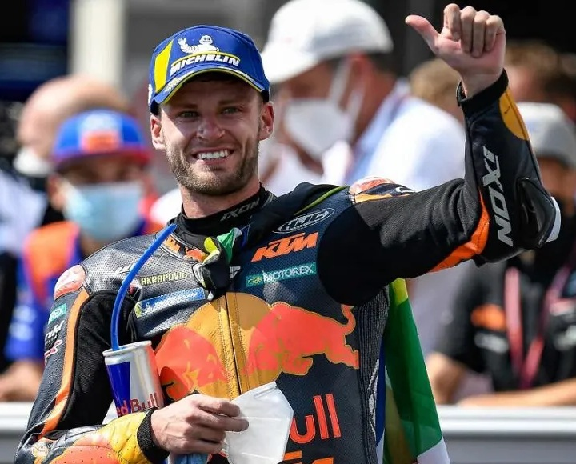

Brad Binder es un piloto sudafricano de motociclismo nacido en Potchefstroom en 1995. Debutó en el Mundial de Moto3 en 2011 y rápidamente destacó por su estilo agresivo y constante. Su mayor logro en esta categoría llegó en 2016, cuando se proclamó campeón del mundo de Moto3 con KTM, convirtiéndose en el primer sudafricano en lograr un título mundial de motociclismo en más de tres décadas.
| Puntos obtenidos. | Posición en la clasificación final de la competición. | Poles. | Victorias. | Podios. |
|---|---|---|---|---|
| 217 | Quinto | 0 | 0 | 1 |
Tras su paso por Moto2, donde también consiguió victorias y consolidó su talento, Binder dio el salto a MotoGP en 2020 con el equipo Red Bull KTM Factory Racing. En su temporada de debut sorprendió al mundo al conseguir su primera victoria en la categoría reina en el Gran Premio de la República Checa, siendo además la primera victoria de KTM en MotoGP. Ese triunfo lo colocó como uno de los pilotos más prometedores de la parrilla.
A lo largo de su carrera en MotoGP, Binder se ha consolidado como el gran referente de KTM gracias a su valentía en pista y capacidad para remontar posiciones. Es conocido por su habilidad en condiciones difíciles, especialmente en carreras con lluvia o situaciones cambiantes. Su estilo combativo y sus actuaciones espectaculares le han permitido ganarse un lugar destacado en el campeonato, manteniéndose como uno de los pilotos más admirados y competitivos de la era actual.
